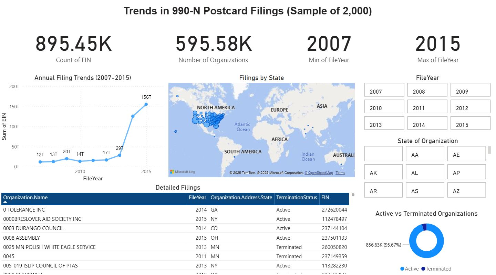

990-N Postcard Filers Dashboard
This project involved creating an interactive dashboard in Power BI to explore trends in nonprofit organizations filing Form 990-N from 2007–2015. This project used a large dataset from the Nonprofit Open Data Collective and focused on data cleaning, trend analysis, and geographic visualization to uncover reporting patterns among small tax-exempt organizations.
Dashboard Screenshot

Based on the dashboard I created, one of the trends I saw was the significant increase in filings around 2015. The number e-filings remained relatively stable up until 2013 with a sudden increase starting in 2014 and peaking at 2015. This sudden spike may be explained by improved awareness of e-filing requirements among nonprofit organizations and changes in IRS enforcement.
I chose to highlight this trend because it showcases a meaningful change in nonprofit reporting behavior, especially with e-filing. It's important to understand when and why large-scale reporting changes occur to provide insight into the impact of certain policy changes, digital infrastructure improvements, or increased outreach and compliance requirements. It also helps to highlight the growth of nonprofit organizations and how they're adapting to federal reporting expectations over time.